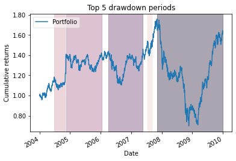
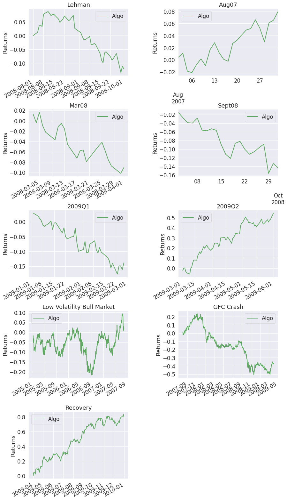
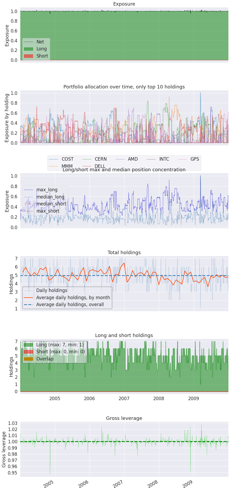
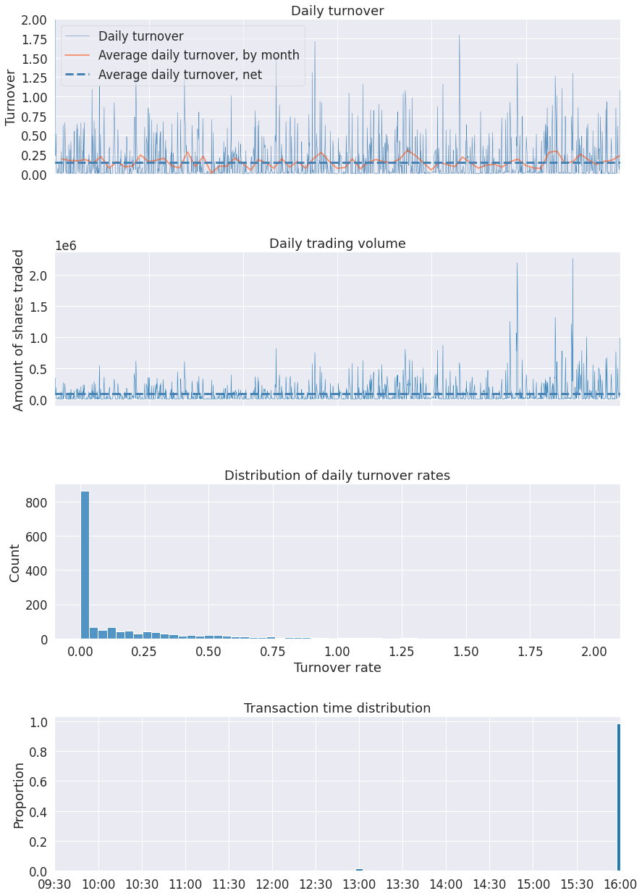
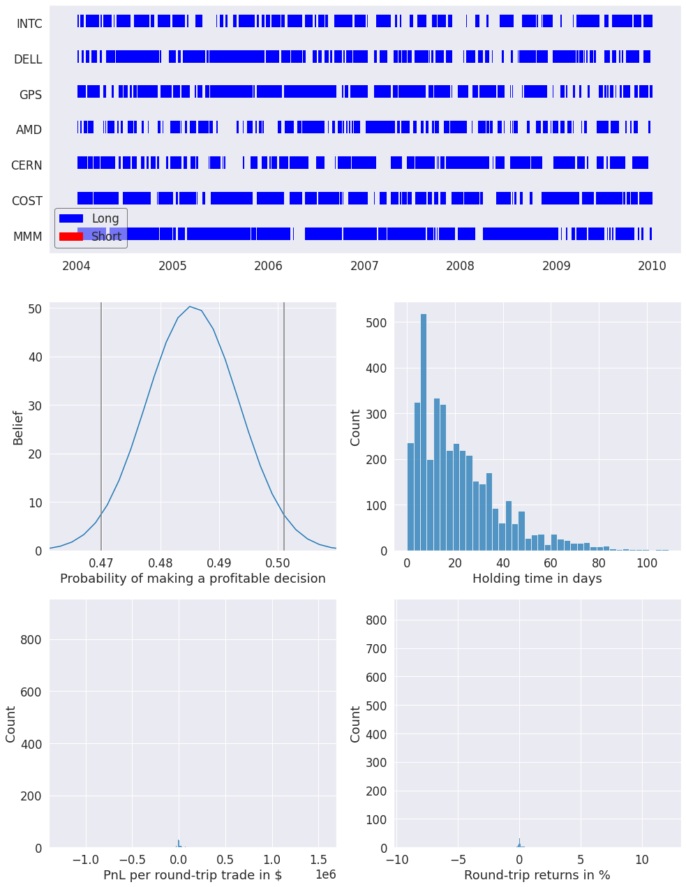
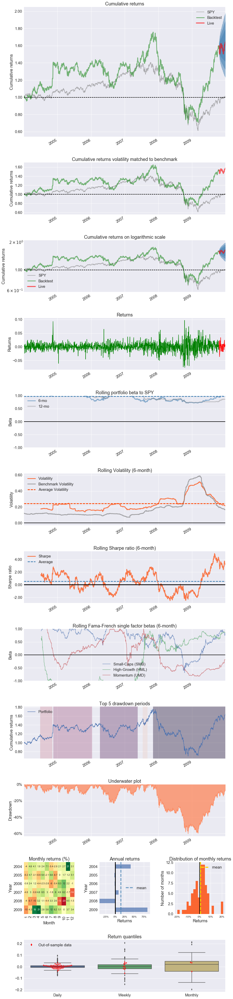
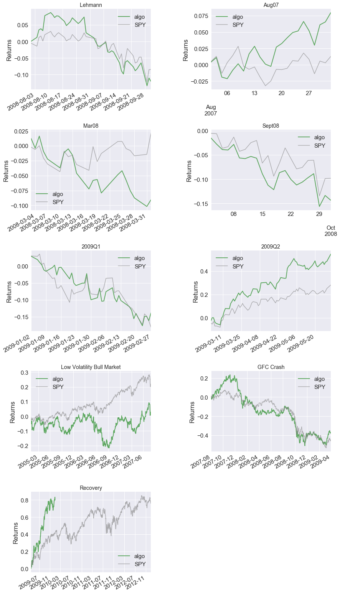
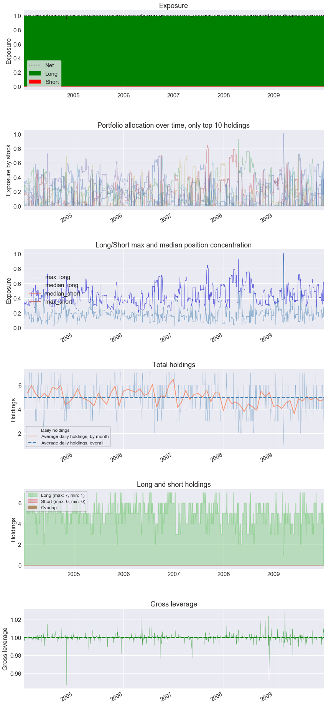
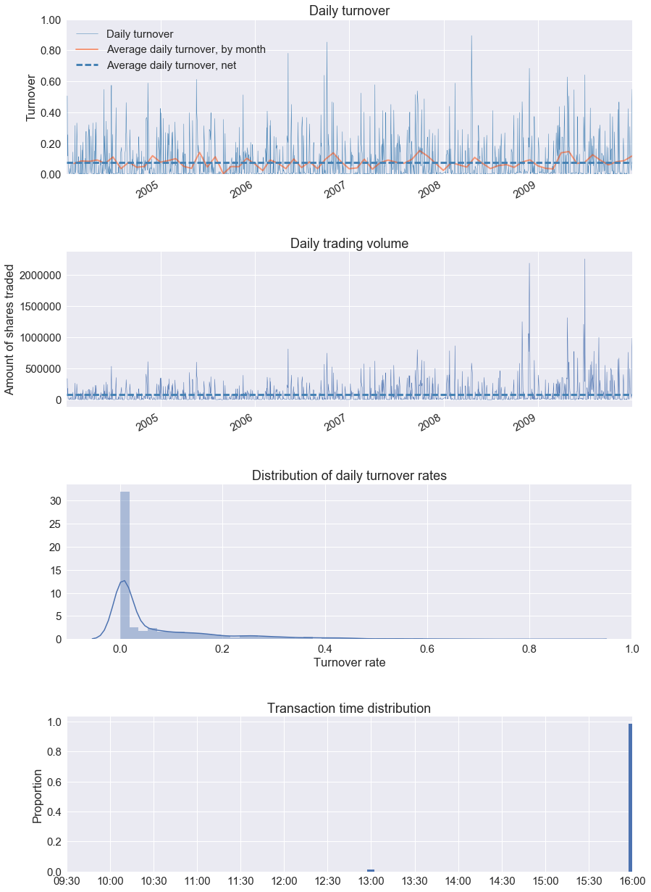

Zipline Algorithm#
Here’s an example where we run an algorithm with zipline, then produce tear sheets for that algorithm.
Imports & Settings#
Import pyfolio and zipline, and ingest the pricing data for backtesting.
You may have to install Zipline first; you can do so using either:
[ ]:
# !pip install zipline-reloaded
or:
[ ]:
# !conda install -c ml4t zipline-reloaded
[1]:
import pyfolio as pf
%matplotlib inline
# silence warnings
import warnings
warnings.filterwarnings('ignore')
import zipline
%load_ext zipline
Ingest Zipline Bundle#
If you have not yet downloaded data for Zipline, you need to do so first (uncomment and execute the following cell):
[2]:
# !zipline ingest
Run Zipline algorithm#
This algorithm can also be adjusted to execute a modified, or completely different, trading strategy.
[5]:
%%zipline --start 2004-1-1 --end 2010-1-1 -o results.pickle --no-benchmark
# Zipline trading algorithm
# Taken from zipline.examples.olmar
import numpy as np
from zipline.finance import commission, slippage
STOCKS = ['AMD', 'CERN', 'COST', 'DELL', 'GPS', 'INTC', 'MMM']
# On-Line Portfolio Moving Average Reversion
# More info can be found in the corresponding paper:
# http://icml.cc/2012/papers/168.pdf
def initialize(algo, eps=1, window_length=5):
algo.stocks = STOCKS
algo.sids = [algo.symbol(symbol) for symbol in algo.stocks]
algo.m = len(algo.stocks)
algo.price = {}
algo.b_t = np.ones(algo.m) / algo.m
algo.eps = eps
algo.window_length = window_length
algo.set_commission(commission.PerShare(cost=0))
algo.set_slippage(slippage.FixedSlippage(spread=0))
def handle_data(algo, data):
m = algo.m
x_tilde = np.zeros(m)
b = np.zeros(m)
# find relative moving average price for each asset
mavgs = data.history(algo.sids, 'price', algo.window_length, '1d').mean()
for i, sid in enumerate(algo.sids):
price = data.current(sid, "price")
# Relative mean deviation
x_tilde[i] = mavgs[sid] / price
###########################
# Inside of OLMAR (algo 2)
x_bar = x_tilde.mean()
# market relative deviation
mark_rel_dev = x_tilde - x_bar
# Expected return with current portfolio
exp_return = np.dot(algo.b_t, x_tilde)
weight = algo.eps - exp_return
variability = (np.linalg.norm(mark_rel_dev)) ** 2
# test for divide-by-zero case
if variability == 0.0:
step_size = 0
else:
step_size = max(0, weight / variability)
b = algo.b_t + step_size * mark_rel_dev
b_norm = simplex_projection(b)
np.testing.assert_almost_equal(b_norm.sum(), 1)
rebalance_portfolio(algo, data, b_norm)
# update portfolio
algo.b_t = b_norm
def rebalance_portfolio(algo, data, desired_port):
# rebalance portfolio
for i, sid in enumerate(algo.sids):
algo.order_target_percent(sid, desired_port[i])
def simplex_projection(v, b=1):
"""Projection vectors to the simplex domain
Implemented according to the paper: Efficient projections onto the
l1-ball for learning in high dimensions, John Duchi, et al. ICML 2008.
Implementation Time: 2011 June 17 by Bin@libin AT pmail.ntu.edu.sg
Optimization Problem: min_{w}\| w - v \|_{2}^{2}
s.t. sum_{i=1}^{m}=z, w_{i}\geq 0
Input: A vector v \in R^{m}, and a scalar z > 0 (default=1)
Output: Projection vector w
:Example:
>>> proj = simplex_projection([.4 ,.3, -.4, .5])
>>> print(proj)
array([ 0.33333333, 0.23333333, 0. , 0.43333333])
>>> print(proj.sum())
1.0
Original matlab implementation: John Duchi (jduchi@cs.berkeley.edu)
Python-port: Copyright 2013 by Thomas Wiecki (thomas.wiecki@gmail.com).
"""
v = np.asarray(v)
p = len(v)
# Sort v into u in descending order
v = (v > 0) * v
u = np.sort(v)[::-1]
sv = np.cumsum(u)
rho = np.where(u > (sv - b) / np.arange(1, p + 1))[0][-1]
theta = np.max([0, (sv[rho] - b) / (rho + 1)])
w = (v - theta)
w[w < 0] = 0
return w
[5]:
| period_open | period_close | starting_cash | ending_cash | portfolio_value | longs_count | shorts_count | long_value | short_value | returns | ... | period_label | algorithm_period_return | algo_volatility | benchmark_period_return | benchmark_volatility | alpha | beta | sharpe | sortino | max_drawdown | |
|---|---|---|---|---|---|---|---|---|---|---|---|---|---|---|---|---|---|---|---|---|---|
| 2004-01-02 21:00:00+00:00 | 2004-01-02 14:31:00+00:00 | 2004-01-02 21:00:00+00:00 | 1.000000e+07 | 1.000000e+07 | 1.000000e+07 | 0 | 0 | 0.000000e+00 | 0.0 | 0.000000 | ... | 2004-01 | 0.000000 | NaN | 0.0 | NaN | None | None | NaN | NaN | 0.000000 |
| 2004-01-05 21:00:00+00:00 | 2004-01-05 14:31:00+00:00 | 2004-01-05 21:00:00+00:00 | 1.000000e+07 | -1.261747e+05 | 1.000000e+07 | 7 | 0 | 1.012617e+07 | 0.0 | 0.000000 | ... | 2004-01 | 0.000000 | 0.000000 | 0.0 | 0.0 | None | None | NaN | NaN | 0.000000 |
| 2004-01-06 21:00:00+00:00 | 2004-01-06 14:31:00+00:00 | 2004-01-06 21:00:00+00:00 | -1.261747e+05 | -1.639664e+04 | 1.007876e+07 | 7 | 0 | 1.009515e+07 | 0.0 | 0.007876 | ... | 2004-01 | 0.007876 | 0.072181 | 0.0 | 0.0 | None | None | 9.165151 | NaN | 0.000000 |
| 2004-01-07 21:00:00+00:00 | 2004-01-07 14:31:00+00:00 | 2004-01-07 21:00:00+00:00 | -1.639664e+04 | 2.168894e+04 | 1.013911e+07 | 6 | 0 | 1.011742e+07 | 0.0 | 0.005989 | ... | 2004-01 | 0.013911 | 0.064700 | 0.0 | 0.0 | None | None | 13.499945 | NaN | 0.000000 |
| 2004-01-08 21:00:00+00:00 | 2004-01-08 14:31:00+00:00 | 2004-01-08 21:00:00+00:00 | 2.168894e+04 | 3.773005e+04 | 9.897065e+06 | 4 | 0 | 9.859335e+06 | 0.0 | -0.023873 | ... | 2004-01 | -0.010293 | 0.202012 | 0.0 | 0.0 | None | None | -2.497026 | -2.976346 | -0.023873 |
| ... | ... | ... | ... | ... | ... | ... | ... | ... | ... | ... | ... | ... | ... | ... | ... | ... | ... | ... | ... | ... | ... |
| 2009-12-24 18:00:00+00:00 | 2009-12-24 14:31:00+00:00 | 2009-12-24 18:00:00+00:00 | 1.503458e+04 | 2.915782e+04 | 1.613946e+07 | 4 | 0 | 1.611030e+07 | 0.0 | 0.000973 | ... | 2009-12 | 0.613946 | 0.256421 | 0.0 | 0.0 | None | None | 0.440104 | 0.643345 | -0.602991 |
| 2009-12-28 21:00:00+00:00 | 2009-12-28 14:31:00+00:00 | 2009-12-28 21:00:00+00:00 | 2.915782e+04 | -5.396543e+03 | 1.627136e+07 | 4 | 0 | 1.627676e+07 | 0.0 | 0.008173 | ... | 2009-12 | 0.627136 | 0.256355 | 0.0 | 0.0 | None | None | 0.445253 | 0.650920 | -0.602991 |
| 2009-12-29 21:00:00+00:00 | 2009-12-29 14:31:00+00:00 | 2009-12-29 21:00:00+00:00 | -5.396543e+03 | -1.236016e+04 | 1.639258e+07 | 3 | 0 | 1.640494e+07 | 0.0 | 0.007450 | ... | 2009-12 | 0.639258 | 0.256286 | 0.0 | 0.0 | None | None | 0.449932 | 0.657801 | -0.602991 |
| 2009-12-30 21:00:00+00:00 | 2009-12-30 14:31:00+00:00 | 2009-12-30 21:00:00+00:00 | -1.236016e+04 | -1.618491e+05 | 1.643268e+07 | 5 | 0 | 1.659453e+07 | 0.0 | 0.002446 | ... | 2009-12 | 0.643268 | 0.256203 | 0.0 | 0.0 | None | None | 0.451374 | 0.659913 | -0.602991 |
| 2009-12-31 21:00:00+00:00 | 2009-12-31 14:31:00+00:00 | 2009-12-31 21:00:00+00:00 | -1.618491e+05 | -9.192017e+04 | 1.612042e+07 | 5 | 0 | 1.621234e+07 | 0.0 | -0.019002 | ... | 2009-12 | 0.612042 | 0.256241 | 0.0 | 0.0 | None | None | 0.438640 | 0.640975 | -0.602991 |
1511 rows × 37 columns
Extract metrics#
Get the returns, positions, and transactions from the zipline backtest object.
[6]:
import pandas as pd
results = pd.read_pickle('results.pickle')
returns, positions, transactions = pf.utils.extract_rets_pos_txn_from_zipline(results)
Single plot example#
Make one plot of the top 5 drawdown periods.
[8]:
pf.plot_drawdown_periods(returns, top=5).set_xlabel('Date');

Full tear sheet example#
Create a full tear sheet for our algorithm. As an example, set the live start date to something arbitrary.
[9]:
pf.create_full_tear_sheet(returns, positions=positions, transactions=transactions,
live_start_date='2009-10-22', round_trips=True)
| Start date | 2004-01-02 | |||
|---|---|---|---|---|
| End date | 2009-12-31 | |||
| In-sample months | 69 | |||
| Out-of-sample months | 2 | |||
| In-sample | Out-of-sample | All | ||
| Annual return | 8.075% | 14.891% | 8.289% | |
| Cumulative returns | 56.911% | 2.736% | 61.204% | |
| Annual volatility | 25.743% | 21.997% | 25.624% | |
| Sharpe ratio | 0.43 | 0.74 | 0.44 | |
| Calmar ratio | 0.13 | 2.03 | 0.14 | |
| Stability | 0.01 | 0.04 | 0.00 | |
| Max drawdown | -60.299% | -7.332% | -60.299% | |
| Omega ratio | 1.08 | 1.13 | 1.08 | |
| Sortino ratio | 0.63 | 1.04 | 0.64 | |
| Skew | 0.22 | -0.29 | 0.21 | |
| Kurtosis | 4.24 | 0.36 | 4.19 | |
| Tail ratio | 0.99 | 1.23 | 0.97 | |
| Daily value at risk | -3.199% | -2.707% | -3.184% | |
| Gross leverage | 1.00 | 1.00 | 1.00 | |
| Daily turnover | 15.071% | 19.106% | 15.201% | |
| Worst drawdown periods | Net drawdown in % | Peak date | Valley date | Recovery date | Duration |
|---|---|---|---|---|---|
| 0 | 60.30 | 2007-11-06 | 2008-11-20 | NaT | NaN |
| 1 | 23.25 | 2006-04-06 | 2006-09-07 | 2007-05-22 | 294 |
| 2 | 12.51 | 2004-11-15 | 2005-10-12 | 2006-01-11 | 303 |
| 3 | 10.90 | 2004-06-25 | 2004-08-12 | 2004-11-04 | 95 |
| 4 | 9.47 | 2007-07-16 | 2007-08-06 | 2007-09-04 | 37 |
| Stress Events | mean | min | max |
|---|---|---|---|
| Lehman | -0.28% | -7.42% | 4.40% |
| Aug07 | 0.35% | -2.96% | 3.03% |
| Mar08 | -0.43% | -3.10% | 3.34% |
| Sept08 | -0.68% | -7.42% | 3.99% |
| 2009Q1 | -0.35% | -4.98% | 3.36% |
| 2009Q2 | 0.71% | -3.78% | 6.17% |
| Low Volatility Bull Market | 0.01% | -6.11% | 6.45% |
| GFC Crash | -0.08% | -7.58% | 9.71% |
| Recovery | 0.32% | -3.78% | 6.17% |
| Top 10 long positions of all time | max |
|---|---|
| sid | |
| COST | 100.75% |
| MMM | 92.36% |
| CERN | 84.47% |
| DELL | 72.76% |
| AMD | 71.05% |
| INTC | 69.19% |
| GPS | 62.11% |
| Top 10 short positions of all time | max |
|---|---|
| sid |
| Top 10 positions of all time | max |
|---|---|
| sid | |
| COST | 100.75% |
| MMM | 92.36% |
| CERN | 84.47% |
| DELL | 72.76% |
| AMD | 71.05% |
| INTC | 69.19% |
| GPS | 62.11% |
| Summary stats | All trades | Short trades | Long trades |
|---|---|---|---|
| Total number of round_trips | 3988.00 | 3.00 | 3985.00 |
| Percent profitable | 0.49 | 0.00 | 0.49 |
| Winning round_trips | 1936.00 | 0.00 | 1936.00 |
| Losing round_trips | 2041.00 | 0.00 | 2041.00 |
| Even round_trips | 11.00 | 3.00 | 8.00 |
| PnL stats | All trades | Short trades | Long trades |
|---|---|---|---|
| Total profit | $6120420.82 | $0.00 | $6120420.82 |
| Gross profit | $37885663.44 | $0.00 | $37885663.44 |
| Gross loss | $-31765242.63 | $0.00 | $-31765242.63 |
| Profit factor | $1.19 | NaN | $1.19 |
| Avg. trade net profit | $1534.71 | $0.00 | $1535.86 |
| Avg. winning trade | $19569.04 | NaN | $19569.04 |
| Avg. losing trade | $-15563.57 | NaN | $-15563.57 |
| Ratio Avg. Win:Avg. Loss | $1.26 | NaN | $1.26 |
| Largest winning trade | $1553166.81 | $0.00 | $1553166.81 |
| Largest losing trade | $-1252569.18 | $0.00 | $-1252569.18 |
| Duration stats | All trades | Short trades | Long trades |
|---|---|---|---|
| Avg duration | 21 days 18:41:17.933801404 | 0 days 20:59:59 | 21 days 19:03:57.591718946 |
| Median duration | 17 days 23:00:00 | 0 days 20:59:59 | 17 days 23:00:00 |
| Longest duration | 109 days 01:00:00 | 0 days 20:59:59 | 109 days 01:00:00 |
| Shortest duration | 0 days 03:00:01 | 0 days 20:59:59 | 0 days 03:00:01 |
| Return stats | All trades | Short trades | Long trades |
|---|---|---|---|
| Avg returns all round_trips | 0.01% | -0.02% | 0.01% |
| Avg returns winning | 0.16% | NaN | 0.16% |
| Avg returns losing | -0.13% | -0.02% | -0.13% |
| Median returns all round_trips | -0.00% | -0.00% | -0.00% |
| Median returns winning | 0.02% | NaN | 0.02% |
| Median returns losing | -0.01% | -0.00% | -0.01% |
| Largest winning trade | 12.13% | -0.00% | 12.13% |
| Largest losing trade | -9.15% | -0.05% | -9.15% |
| Symbol stats | AMD | CERN | COST | DELL | GPS | INTC | MMM |
|---|---|---|---|---|---|---|---|
| Avg returns all round_trips | 0.03% | 0.03% | 0.00% | -0.00% | 0.03% | -0.13% | 0.07% |
| Avg returns winning | 0.12% | 0.16% | 0.11% | 0.12% | 0.14% | 0.14% | 0.25% |
| Avg returns losing | -0.07% | -0.10% | -0.09% | -0.11% | -0.11% | -0.26% | -0.15% |
| Median returns all round_trips | 0.00% | -0.00% | -0.00% | -0.00% | 0.00% | -0.00% | 0.00% |
| Median returns winning | 0.01% | 0.01% | 0.02% | 0.01% | 0.02% | 0.01% | 0.04% |
| Median returns losing | -0.01% | -0.01% | -0.01% | -0.01% | -0.01% | -0.02% | -0.01% |
| Largest winning trade | 2.22% | 12.13% | 2.06% | 3.36% | 3.16% | 1.63% | 7.84% |
| Largest losing trade | -2.87% | -5.52% | -4.20% | -4.87% | -7.19% | -9.15% | -8.30% |
| Profitability (PnL / PnL total) per name | |
|---|---|
| symbol | |
| INTC | 45.09% |
| COST | 42.43% |
| CERN | 35.53% |
| MMM | 13.51% |
| GPS | -2.48% |
| AMD | -7.16% |
| DELL | -26.91% |





Suppressing symbol output#
When sharing tear sheets it might be undesirable to display which symbols where used by a strategy. To suppress these in the tear sheet you can pass hide_positions=True.
[6]:
pf.create_full_tear_sheet(returns, positions=positions, transactions=transactions,
live_start_date='2009-10-22', hide_positions=True)
Entire data start date: 2004-01-02
Entire data end date: 2009-12-31
In-sample months: 69
Out-of-sample months: 2
| All | In-sample | Out-of-sample | |
|---|---|---|---|
| Annual return | 8.3% | 8.1% | 14.9% |
| Cumulative returns | 61.1% | 56.8% | 2.7% |
| Annual volatility | 25.6% | 25.7% | 22.0% |
| Sharpe ratio | 0.44 | 0.43 | 0.74 |
| Calmar ratio | 0.14 | 0.13 | 2.03 |
| Stability | 0.00 | 0.01 | 0.04 |
| Max drawdown | -60.3% | -60.3% | -7.3% |
| Omega ratio | 1.08 | 1.08 | 1.13 |
| Sortino ratio | 0.64 | 0.63 | 1.04 |
| Skew | 0.21 | 0.22 | -0.29 |
| Kurtosis | 4.19 | 4.24 | 0.36 |
| Tail ratio | 0.97 | 0.99 | 1.23 |
| Daily value at risk | -3.2% | -3.2% | -2.7% |
| Gross leverage | 1.00 | 1.00 | 1.00 |
| Daily turnover | 7.6% | 7.5% | 9.6% |
| Alpha | 0.09 | 0.10 | -0.03 |
| Beta | 0.83 | 0.82 | 1.19 |
| Worst drawdown periods | Net drawdown in % | Peak date | Valley date | Recovery date | Duration |
|---|---|---|---|---|---|
| 0 | 60.30 | 2007-11-06 | 2008-11-20 | NaT | NaN |
| 1 | 23.25 | 2006-04-06 | 2006-09-07 | 2007-05-22 | 294 |
| 2 | 12.52 | 2004-11-15 | 2005-10-12 | 2006-01-11 | 303 |
| 3 | 10.90 | 2004-06-25 | 2004-08-12 | 2004-11-04 | 95 |
| 4 | 9.47 | 2007-07-16 | 2007-08-06 | 2007-09-04 | 37 |

| Stress Events | mean | min | max |
|---|---|---|---|
| Lehmann | -0.28% | -7.41% | 4.40% |
| Aug07 | 0.35% | -2.96% | 3.03% |
| Mar08 | -0.43% | -3.10% | 3.34% |
| Sept08 | -0.68% | -7.41% | 3.99% |
| 2009Q1 | -0.35% | -4.98% | 3.36% |
| 2009Q2 | 0.71% | -3.78% | 6.17% |
| Low Volatility Bull Market | 0.01% | -6.11% | 6.45% |
| GFC Crash | -0.08% | -7.58% | 9.71% |
| Recovery | 0.32% | -3.78% | 6.17% |



[ ]: